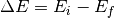
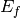

QECoverage is a small planning tool to allow inelastic neutron scattering users to determine graphically the momentum / energy transfer limits for a given spectrometer and fixed energy.
To use, select the geometry (direct or indirect) and instrument from the tabs and drop-down menu. For direct geometry spectrometers, an incident energy (Ei) in meV must be given; for indirect geometry machines, the final energies are fixed at a few values which must be selected from the drop-down menu. (Negative values of Ei are treated as positive - the program only uses the magnitude of Ei).
To overplot the calculated Q-E trajectories, set the “Plot Over” check box.
The plot range is from Emin to Ei for direct, and from -Ef to Emax for indirect geometry spectrometers, and Emin and Emax may be inputted in the appropriate text box. If this box is left empty, Emin=-Ei (Emax=Ef) is set automatically for direct (indirect) geometry.
You can choose to create a 1D Mantid workspace for latter plotting using the “Create Workspace” check box.
In addition, for HYSPEC, where the detector bank can be rotated, an additional parameter S2 denoting the scattering angle of the center of the detector bank is required. The detectors extend over 60 degrees, so the two theta limits will be taken from max([0, abs(s2)-30]) to abs(s2)+30.
The Q(E) trajectory is calculated from the kinematic conditions:

and

which is then solved for known () for direct (indirect) geometry.
Category: Interfaces